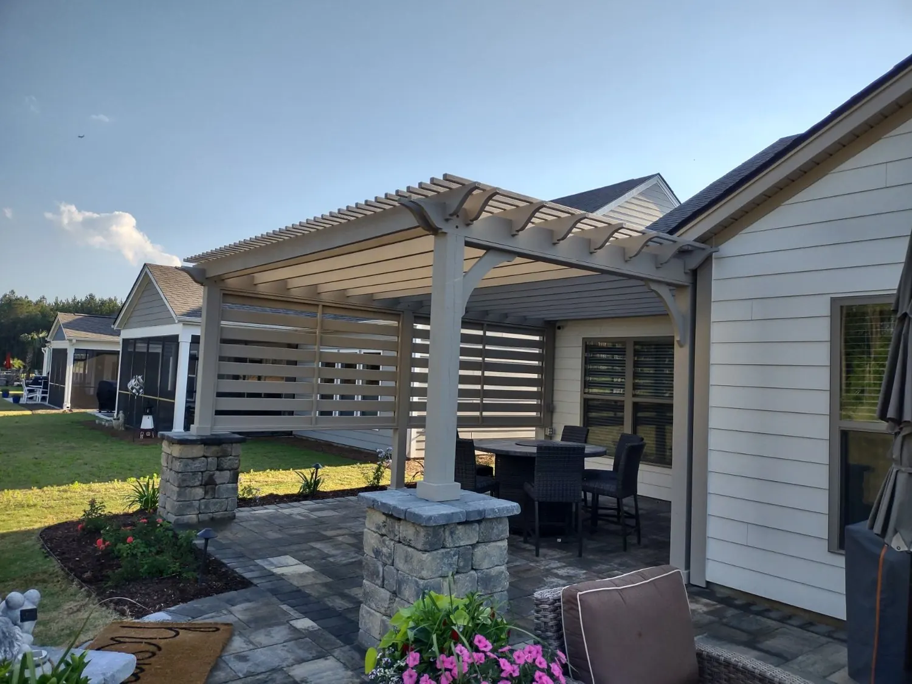

Custom Outdoor Structures for Charleston Backyards

Outdoor Structures In Charleston,SC
Transform your outdoor living space with custom-built outdoor structures from Cramers Landscaping. Whether you’re dreaming of a shaded pergola, a private fencing solution, or a stylish patio that seamlessly blends with your landscape, we design and build outdoor structures that are as functional as they are beautiful. Serving Charleston and surrounding Lowcountry communities, we take pride in delivering craftsmanship that enhances curb appeal, increases property value, and expands your usable living space.
Why Outdoor Structures Matter
In the Charleston climate—where mild winters and sun-soaked summers are the norm—outdoor structures aren’t just add-ons; they’re lifestyle upgrades. Structures like pergolas, pavilions, custom fences, arbors, and patios provide:
- Extended Living Space: Enjoy cooking, dining, or relaxing outdoors in comfort and style.
- Shade and Protection: Reduce sun exposure while adding dimension to your landscape.
- Privacy and Security: Custom fencing or walls can create private backyard sanctuaries.
- Aesthetic Appeal: Structures define spaces, anchor designs, and increase visual interest.
- Property Value Boost: Well-designed outdoor additions are a strong investment for resale.
At Cramers Landscaping, we blend architectural integrity with horticultural expertise for stunning, long-lasting results.
Full-Service Landscaping Solutions in Summerville
We design and install a wide variety of landscape structures tailored to your space, needs, and aesthetic preferences:Pergolas & Pavilions
Add shade and elegance with custom wood or composite pergolas. Perfect for garden areas, decks, patios, and walkways. We can integrate lighting, fans, and even retractable canopies for added functionality.
Fencing & Privacy Screens
Define property lines or add privacy with custom wood or vinyl fences. Options include:
- Horizontal slat fencing
- Traditional picket fencing
- Decorative privacy screens
- Trellises with climbing vines
We also install gates and access points for both function and visual symmetry.
Patios & Stonework
We build natural stone, brick, or paver patios that create a seamless transition between your home and outdoor spaces. These areas are ideal for:
- Dining spaces
- Outdoor kitchens
- Fire pit areas
- Pool surrounds
Each patio is installed with proper grading and drainage for longevity and safety.
Decks & Boardwalks
Whether it’s a raised deck for your home or a boardwalk across a garden or wet area, our carpentry team builds durable, weather-resistant platforms designed for Lowcountry conditions.
Garden Arbors & Trellises

Add romance and vertical structure to your garden with arbors and trellises that support climbing roses, jasmine, or wisteria.

Built for the Lowcountry Climate
- Moisture-Resistant Materials: We use pressure-treated wood, composite decking, and galvanized fasteners to withstand humidity and salt air.
- Sun and Wind Protection: Structures are engineered to handle high sun exposure and occasional storm winds.
- Proper Drainage Planning: All patios and footings are installed with drainage in mind to prevent pooling or water damage.
- Blended Design: We ensure your structure complements existing plantings, hardscapes, and the architecture of your home.
Our Process
Every project is managed from start to finish with clear communication and precision.
On-Site Consultation

We evaluate your space and listen to your ideas and goals.
Custom Design Plan

We provide detailed sketches or renderings and select materials based on your vision and budget.
Permitting & Prep

If needed, we handle permitting and utility locates.
Professional Installation

Our skilled team constructs your structure to code, with full cleanup and client walkthrough.
Optional Landscaping Integration

We can surround your structure with plantings, lighting, or irrigation to complete the look.


Great for All Property Types
We build outdoor structures for:
- Private residences
- Vacation homes (especially in Folly Beach, Sullivan’s Island, and Isle of Palms)
- Apartment communities
- Boutique hotels and bed-and-breakfasts
- Commercial properties with outdoor seating or lounging areas
Whether you're creating a cozy nook for your family or a high-end patio for guests, we deliver premium results.

Combine With These Services
Outdoor structure projects pair perfectly with:
- Hardscape Installation
- Landscape Design and Enhancements
- Landscape Installation
- Irrigation and Water Management
- Lighting and Electrical Integration (available upon request)
We can deliver a complete outdoor living transformation in one seamless scope of work.
Areas Outdoor Structures
Cramers Landscaping proudly serves:Frequently Asked Questions
How long do outdoor structures take to build?
Most projects range from 1–3 weeks depending on complexity, permitting, and material availability.
Do you handle permits?
Yes. We’ll manage any required city or HOA permits and ensure compliance with local regulations.
Can I integrate lighting or a fan into my pergola or pavilion?
Yes. We can coordinate with licensed electricians or install conduit during construction for future wiring.
Request Your Free Consultation
Request A Quote
Ready to add comfort, elegance, and value to your outdoor space? Contact Cramers Landscaping to begin your custom outdoor structure project. From pergolas to patios and fencing to trellises, we’re Charleston’s trusted name in functional landscape architecture.
Get started today with a consultation.